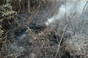
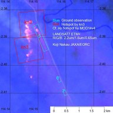

Monitoring wild fire is very important because it is big source of CO2 emission. Dr.Nakau explains his research to detect peat land fire in Kalimantan island by satellite.
Hokkaido University, Faculty of Science,
Department of Natural History Sciences,
Cosmoscience
| Picture 1 | Picture 2 | Picture 3 |
|---|---|---|
|  |  |
Peat (turf) is an accumulation of partially decayed vegetation matter or histosol (wikipedia). Peatlands are areas of land with a naturally accumulated layer of peat (wikipedia). Utilization of thick Peatlands is recent human activity in Indonesia. For acid of peat, farmer need to burn farmland to neutralize soil. Such fires sometimes widely spread and ignite peat underground. Once peat is ignited, it smolders and last long time. Picture 1 shows an example landscape of Peatland fire. It is difficult to extinguish them, because they dig a “hidden tunnel” as a result of combustion of underground peat layer. You can find a smoke emitted from a hole on a ground as picture 2. This hole is made by peat fire.
In many countries, satellite imagery is used to monitor wildfires. In practical wildfire monitoring, moderate resolution imagery (1km resolution) is utilized to detect wildfire for everyday observation is required.
However, it is difficult to detect Peatland fire from such satellite imagery, because combustion is hidden in underground peat layer. Picture 3 shows an example high resolution infrared imagery captured by LANDSAT7. This figure is a pseudo color imagery using infrared with resolution 30m. In this figure, fire flames are colored as orange to yellow and weak fires are colored as red. Blue rectangles are area of ground confirmed Peatland fires. Red rectangles are pixels of detected wildfire by newly developed algorithm with 1km resolution satellite imagery.
You can find a radish area in blue rectangles; however the signal is quite weak comparing to strong flames in red rectangles. So, we are still trying to develop a sensitive algorithm or high resolution sensors to detect Peatland fire for satellite imagery.
Picture 3: Bands of 2.2μm, 1.6μm and visible red are assigned as Red, Green and Blue in this picture respectively.